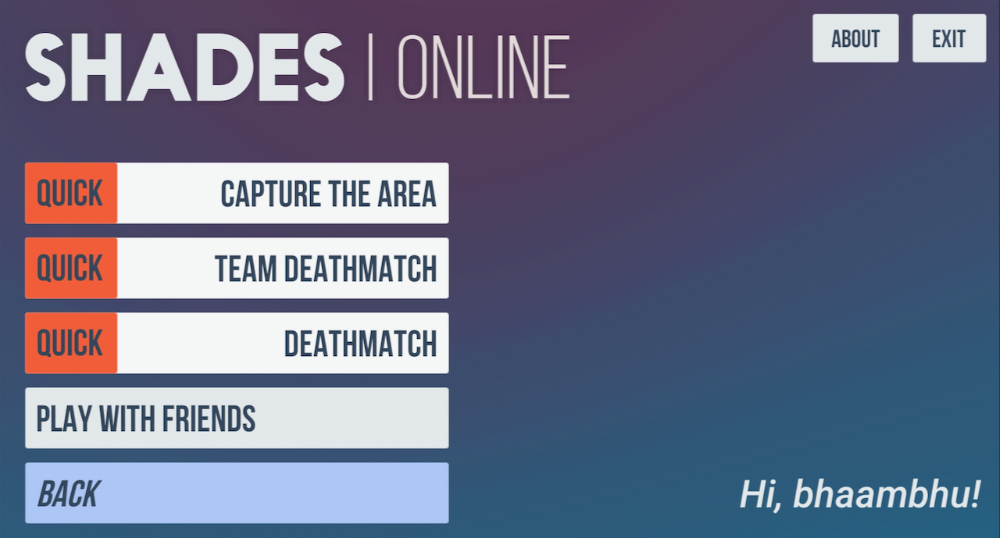
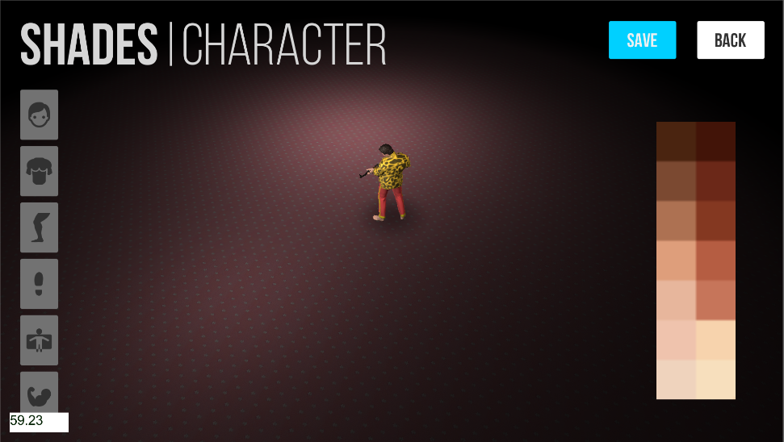

SHADES: Combat Militia
A top down shooter game I made for the android platform. This game is not open-source yet but I plan to make it.
The game was loved by the people, and was an instant hit with over 1 Million downloads and an average rating of 4.5/5 stars and 19K reviews on the Google Play Store.


Why I Made This Project
I just wanted to play this type of game with my friends, but could not find any, so I decided to make one. If you are a fan of the good-old shooter games we used to play on computers, you will like this.
Tech
Unity3D, C#, Blender, GIMP, Google Play Services
Features
Enemy AI
For the player the game is top-down, but the AI behave naturally according to if they see or hear something.
Character Customizer
Since this is a top down game, the character's minute details are not much visible during the gameplay, but still, character customization was implemented to allow the players to be unique, especially during multiplayer sessions.
Weapons Market
A vast range of weapons, with their own sounds and in-game 3D models. The weapons are the only items that could be purchased using the in-game currency Black Gold.
Multiplayer
The game supports Online Multiplayer and Local Multiplayer (through WiFi Hotspot) and three multiplayer modes - Deathmatch, Team Deathmatch, and Capture the Flag.
Both of these technologies have many differences, for local multiplayer has less latency and packet loss than online mutlplayer.
Following video shows the LAN connectivity and the Map and Time Voting System through which all players can vote for their desired map and match time length.
Deathmatch and Team Deathmatch are very common, below is a demonstration of a 2-player Capture the Flag match. In this game mode, the game divides the players into two teams - Team A and Team B, the map has 3 Flags and the players have to turn each flag into their team's color and make them stay like that for 30 seconds to win. If round timer runs out before that, the team with majority of flags wins. It is most fun when it turns into pure chaos - when both teams have multiple players.
Maps
The game had 6 maps, from small to large to very large size. The maps are beautifully lit and carefully crafted for strategic multiplayer spawning, enemy patrol paths, and pickups.
1. Carnage
Small sized map for intence combat and enough corners. It's the same map that is shown in the Enemy AI and Multiplayer videos above.
2. Villa
Medium sized map for team combat in an indoor-home setting.
3. Theater
Medium sized map inspired by the theater map from Rainbow Six Vegas 2.
4. Apocalypse
Large sized map with an outdoor post-apocalyptic setting.
5. Office
Medium sized map with a 3AM at the office vibe.
6. Faller
Small sized map in which players have to be careful to not fall down.
Google Sign In
User can sign-in through Google Play Games, which further allows the player to save progress on the cloud, play online multiplayer and unlock achievements.
Stats
The game collects the player's various stats for display in the Hall of Fame section.
Also, the player earns XP points by playing and killing in different styles, which in-turn promote the rank of the player, making the player eligible of acquiring better weapons.
Small Size
All of this - the 6 lightmapped maps, weapon models, character creation assets, pickup models, enemy models and animations, sound effects, voices, bgm, 2d Assets, libraries and code - comes in a small package of only 71MB, achieved through various performance adjustments for low-spec mobile phones.
A Thanking Note
I am endlessly thankful for the love and support this game received, especially the love I received from the people through this game. There have been countless positive and heart-warming reviews, comments, and e-mails by the players, that I love to go back to and read whenever I get a chance. My journey of life has been a little more amazing because of YOU.
Currently, this game is disabled on the Google Play Store because it needs an update to include various things. One of these is to show the user a terms and conditions screen for the anonymous data collection done by the Unity Analytics library. Also, the multiplayer technologies that the game uses have become obsolete over the years and need to be changed.
I started making an updated and improved version in 2019 with a different and improved multiplayer technology, but got really busy with my career and have been really busy ever since so it never got released.
You can see the updated and sleek character customizer.
Regards,
Sanjay Bhaambhu.